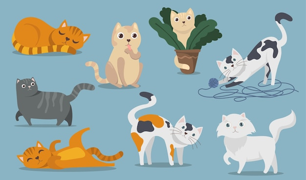

Some cool facts about cats :

I bet, you didn't know these :
- House cats share 95.6% of their genetic makeup with tigers
- The oldest cat in the world was 38 years old!
- Cats have a total of 32 muscles in each of their ears, alone! All these muscles help cats rotate their ears 180 degrees!
- A cat’s brain is somewhat similar to the human brain to that of a dog. Humans and cats have identical emotional regions in their brains.
- Cats spend 70% of their lives sleeping